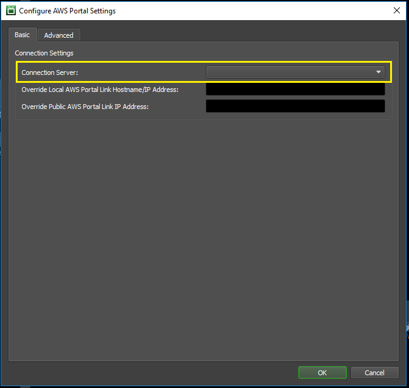

Note
While AWS Portal can enable cloud rendering in Deadline 10, AWS Deadline Cloud is a newer offering that has been built specifically for the cloud. It is a fully managed service that does not require installation or maintenance of infrastructure (e.g., repository, database, or license server). Worker fleet auto-scaling, asset synching, and licensing are all managed natively within AWS by Deadline Cloud. See here for more information on Deadline Cloud and its capabilities.
Configuring AWS Portal¶
In this section, you will configure several settings that are required to use the AWS Portal.
We will only look at the most basic configuration options here. For information on other options, please see the AWS Portal Configuration Reference.
Prerequisites¶
Before starting this section, you should have:
Installed the Deadline Client on the machine that you will use to configure AWS Portal
Login to AWS Portal¶
Upon first installing AWS Portal, you must login.
Open the Deadline Monitor.
Select Tools → Power User Mode.
Open the AWS Portal Panel. (Select the ‘Panels’ Icon, then click AWS Portal)
You should be prompted with the AWS Portal Login Dialog. Enter the keys that you saved during the AWSPortal IAM User Setup steps that you followed earlier (In the background, this will also also trigger Asset Transfer S3 bucket creation, if one doesn’t already exist in your account).

Specify your Remote Connection Server¶
First, you must specify your Remote Connection Server (RCS). This setting is used by AWS Portal Link. It’s required so that the Deadline Workers running on AWS can connect to your local Deadline Repository, via AWS Portal Link and your RCS.
Open the Deadline Monitor.
Change to the “Basic” tab.
Change the “Connection Server” to the Remote Connection Server that you started earlier.

Set your Asset Server IP¶
Next, you must specify the local IP address of the machine that is running the AWS Portal Asset Server. This setting is used by AWS Portal Link. It’s required so that the Deadline Workers running on AWS can access your access files, via AWS Portal Link and AWS Portal Asset Server.
Open the Deadline Monitor.
Enter Power User Mode (Tools menu → Power User Mode).
Open the Asset Server Settings dialog (Tools Menu → Configure Asset Server).
Set the “Asset Server Local IP Address” to the local IP Address of the machine running the Asset Server.
To determine the IP address, follow the instructions in “How to Find Your Local IP Address” on the machine that is running the AWS Portal Asset Server.
If you will only submit Deadline jobs from the same machine that is running the AWS Portal Asset Server, then you can use the IP address 127.0.0.1.

Next Step¶
Now you’re done the basic configuration that’s necessary to run AWS Portal.
Next, you’ll need to configure software licenses for your AWS Portal Workers to use.
Or, if you’re using software that doesn’t require a license, you can jump ahead to using the AWS Portal.